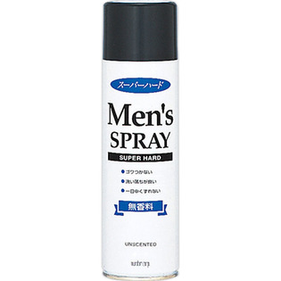

返回列表
产品名称：メンズヘアスプレー スーパーハード 無香料

マンダム メンズヘアスプレー スーパーハード 無香料 ２７５ｇ
メーカー マンダム
JANコード 4902806197181
商品の特徴
●ゴワつかない
●洗い落ちが良い
●一日中くずれない
- 成分・分量
- エタノール、ＬＰＧ、アクリル酸アルキルコポリマーＡＭＰ、（アクリレーツ／アクリル酸アルキル（Ｃ１-１８）／アルキル（Ｃ１-８）アクリルアミド）コポリマーＡＭＰ、（ＰＰＧ-７／コハク酸）コポリマー、ジフェニルシロキシフェニルトリメチコン、パンテノール
- 用法及び用量
- ○髪から１０～１５cmはなしてスプレーします○下向きに使うとガスだけが出て中味が残ります○乾いた後に髪にブラシ等を通すと 白い粉が出ることがあるので避けてください○シャンプーで落ちにくいときは 浴用石ケンをお使いください○スプレーがつまったら ボタン部分をぬるま湯につけてからお使いください